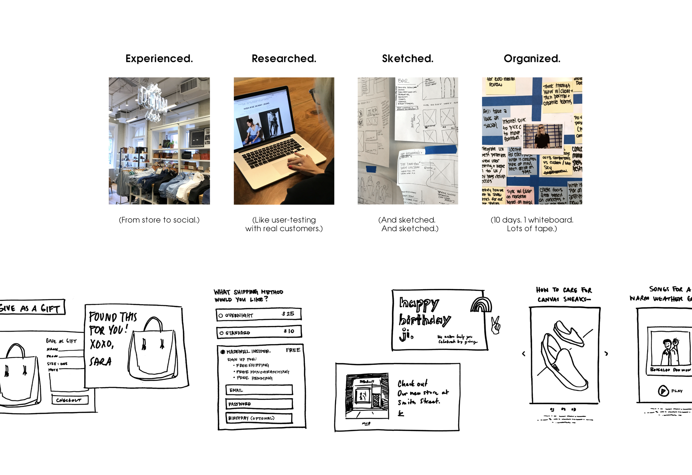
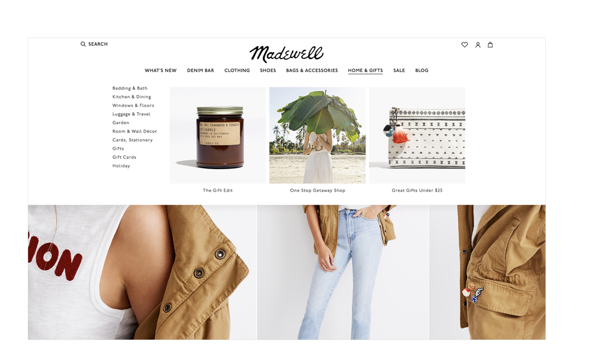
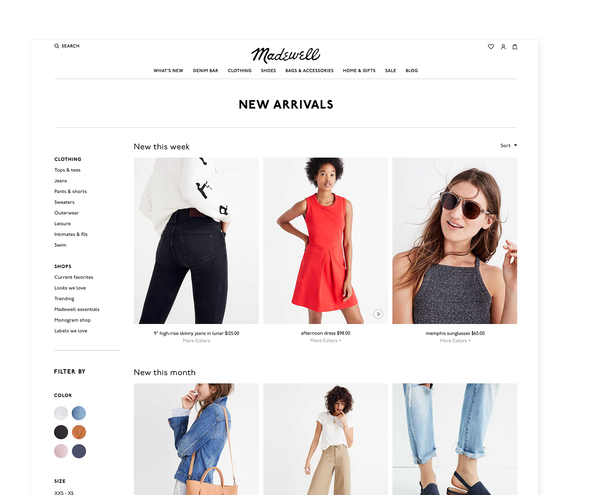
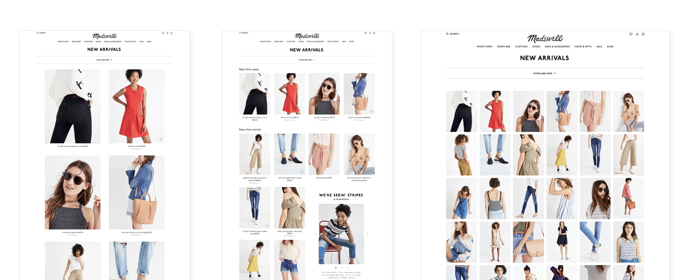
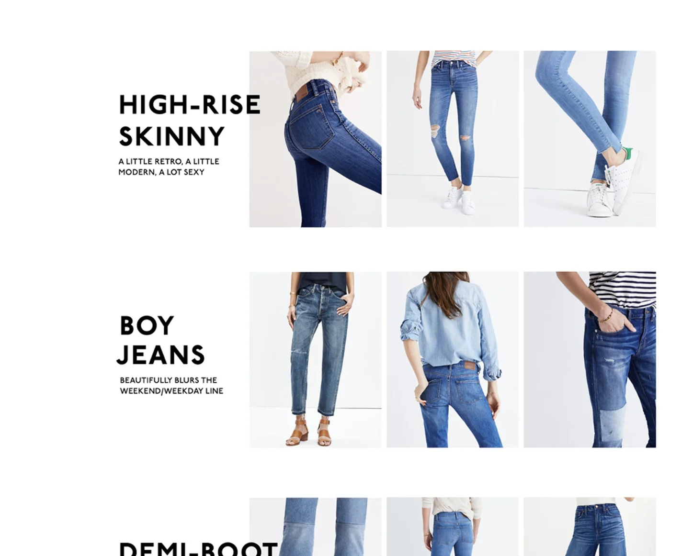
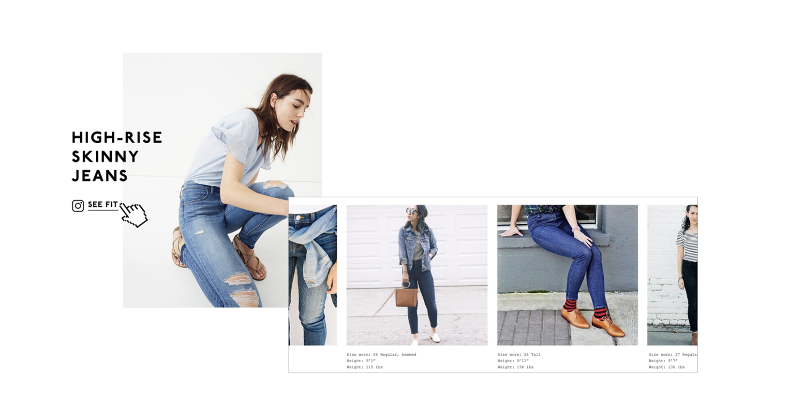
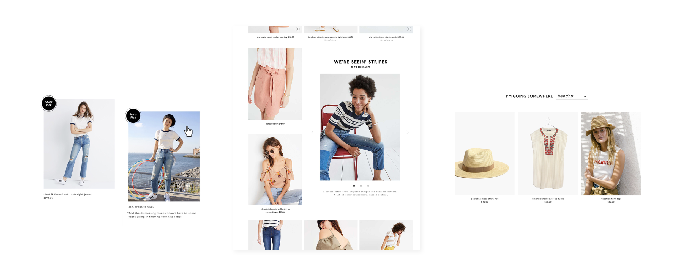

Madewell
Creative Concepts.
In June 2017, Madewell partnered with SapientRazorfish for a month of creative ideation. Together we identified key business areas, held collaborative workshops, and brainstormed a collection of ideas and concepts showing the future of Madewell.com.
One month of creative ideation.
We held numerous workshops with stakeholders and potential users to identify priority needs for the web experience. The work that came out of those rooms is organized below by category: creative solutions our team designed across the surfaces a customer actually moves through on Madewell.com.

Mega-nav: show her something new.
Mega-nav. Many images within the nav afford opportunities to show her something new, exposing her to content she might not otherwise see.

Top nav: uncluttered, focused.
The top nav offers an uncluttered browsing experience, containing all filter and sort options in one place that’s easily accessible when needed. This frees up the overall screen real estate to place more focus on the products, though it does restrict the number of filter options in the limited horizontal space.

Left nav: familiar but buried.
The most common placement for filters, with a large vertical space for options. Although common, the left filter is often combined with category navigation directly above it, pushing the filters lower on the page where she’s less likely to notice them.

A grid that moves with her.
The fluid grid gives the user freedom to browse the way they actually want to, switching between scanning many products quickly and zooming into the details of one without breaking the page.

Hover Lover & Category Preview.
Hover Lover. A cool way to interact with each denim category. On hover, the images and descriptions dynamically change and let her focus in on one category’s selection of fits at a time.
Category Preview. Display the categories horizontally as an overview, which the user can then expand.

Instagram Fit & the Perfect Pair.
Instagram Fit. A universally accessible fit gallery, tapping our users for images. A powerful opportunity to help our customer understand fit visually, by seeing how clothing fits on bodies like hers.
Perfect Pair. Using simple interactions and clear language, we help her understand fit before she ever has to return anything.



A direction, not a launch.
The work was a one-month concept exploration. Not all of it shipped, but several patterns from this engagement informed the direction of subsequent Madewell.com iterations, and the conversation about what an editorial denim e-commerce experience could feel like.
